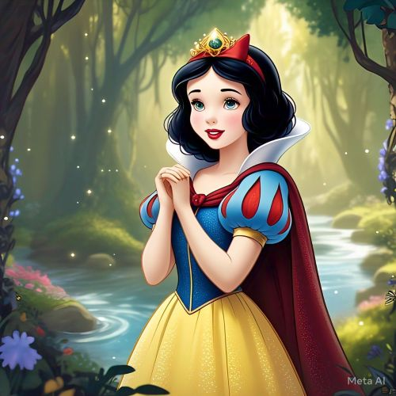
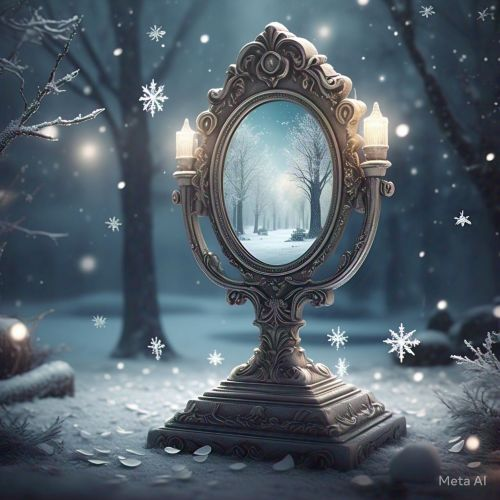
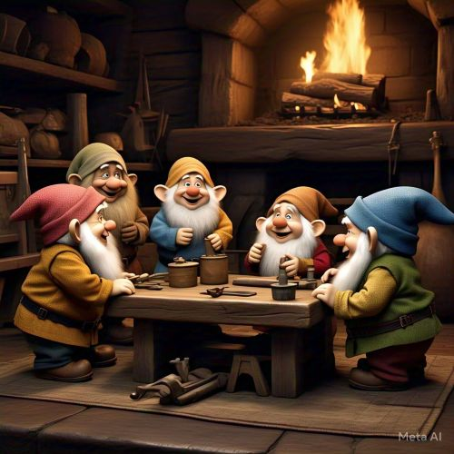
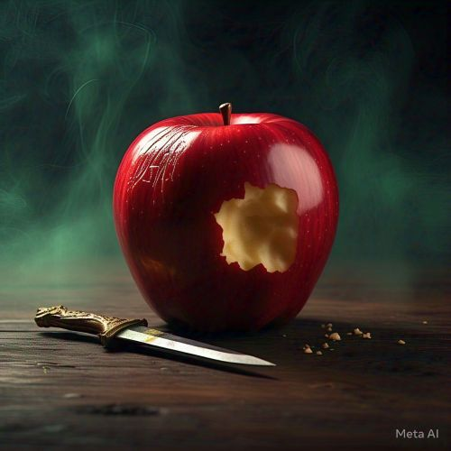

A História de Branca de Neve
Era uma vez, em um reino distante, uma princesa chamada Branca de Neve, com pele tão branca quanto a neve, lábios vermelhos como o sangue e cabelos negros como o ébano. Todos no reino amavam a princesa por sua bondade, mas sua madrasta, a rainha má, tinha um ciúmes do seu encanto.
O Espelho Mágico
A cada dia, a rainha perguntava ao espelho mágico: "Espelho, espelho meu, existe alguém mais bela do que eu?". E sempre a resposta era: "Branca de Neve é a mais bela de todas". O ciúmes consumia a rainha e ela decidiu acabar com a princesa.
A Fuga na Floresta
Com raiva, a rainha mandou que a princesa fosse levada à floresta para ser morta. No entanto, o caçador teve pena de Branca de Neve e a deixou escapar. Ela encontrou uma casa onde sete anões moravam e passou a viver com eles.
O Encontro com a Maçã Envenenada
Com o passar dos dias, a rainha, disfarçada de velha, ofereceu a Branca de Neve uma maçã envenenada. Ao morder a fruta, Branca de Neve caiu em um sono profundo.
O Final Feliz
Após o beijo de um príncipe, Branca de Neve acordou do feitiço e, com a ajuda dele, derrotou a rainha má. O reino foi libertado, e ela e o príncipe viveram felizes para sempre.